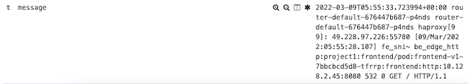

Deployment Strategy with OpenShift Route
Application Deployment
Deploy 2 version of frontend app. Each deployment and service use label app and version for select each version. Initial Route will routing all traffic to v1.
Deploy frontend v1 and v2 and create route frontend.yaml
oc apply -f manifests/frontend.yaml -n project1
Blue/Green Deployment
Test Route
FRONTEND_URL=https://$(oc get route frontend -n project1 -o jsonpath='{.spec.host}') while [ 1 ]; do curl -k $FRONTEND_URL/version echo sleep 1 doneUse another terminal to patch route to frontend v2
oc patch route frontend -p '{"spec":{"to":{"name":"frontend-v2"}}}' -n project1Check output from cURL that response is from frontend-v2
Set route back to v1
oc patch route frontend -p '{"spec":{"to":{"name":"frontend-v1"}}}' -n project1Check output from cURL that response is from frontend-v1
Canary Deployment
Apply route for Canary deployment to v1 and v2 with 80% and 20% ratio route-with-alternate-backend.yaml
oc apply -f manifests/route-with-alternate-backend.yaml -n project1Call frontend for 10 times. You will get 8 responses from v1 and 2 responses from v2
FRONTEND_URL=https://$(oc get route frontend -n project1 -o jsonpath='{.spec.host}') COUNT=0 while [ $COUNT -lt 10 ]; do curl -k $FRONTEND_URL/version echo sleep .2 COUNT=$(expr $COUNT + 1) doneUpdate weight to 60% and 40%
oc patch route frontend -p '{"spec":{"to":{"weight":60}}}' -n project1 oc patch route frontend --type='json' -p='[{"op":"replace","path":"/spec/alternateBackends/0/weight","value":40}]' -n project1Re-run previous bash script to loop frontend. This times you will get 6 responses from v1 and 4 responses from v2
Restrict TLS to v1.2
- Check default ingresscontroller by run command or use OpenShift Web Admin Console
oc edit ingresscontroller default -n openshift-ingress-operator
Use Web Admin Console to search for ingressscontroller and select default

- Minimum TLS version can be specified by attribute minTLSVersion

- Also test with custom profile, edit
tlsProfile:and click Save
spec:
replicas: 2
tlsSecurityProfile:
type: Custom
custom:
ciphers:
- ECDHE-ECDSA-AES128-GCM-SHA256
- ECDHE-RSA-AES128-GCM-SHA256
minTLSVersion: VersionTLS12
Test TLS/SSL
To test TLS/SSL encryption enabled on OpenShift ingresscontroller, use https://testssl.sh/ testssl.ssh tool to run report for Ingress VIP support of TLS/SSL ciphers and protocols
Run the test
docker run --rm -ti drwetter/testssl.sh https://frontend-project1.apps.ocp01.example.com
Sample results
mTLS
WIP
Route Sharding
Access Log
Router's access log can be enabled to syslog or sidecar container of router's pods. This can be done by add spec.logging.acess.destination.type to IngressController in openshift-ingress-operator namespace with syslog or Container respectively.
Following set default IngressController with access log in container.
oc patch IngressController default -n openshift-ingress-operator \
-p '{"spec":{"logging":{"access":{"destination":{"type":"Container"}}}}}' --type=merge
oc patch IngressController default -n openshift-ingress-operator \
-p '{"spec":{"logging":{"access":{"httpLogFormat":"%ci:%cp [%t] %ft %b/%s %B %bq %HM %HU %HV"}}}}' --type=merge
oc get pods -n openshift-ingress
Check output that existing router pods are terminated and new router pods contains 2 containers
NAME READY STATUS RESTARTS AGE
router-default-64bb598c79-78lks 1/1 Running 0 18m
router-default-64bb598c79-w4mgl 1/1 Terminating 0 18m
router-default-66d57c45c8-2lsvq 2/2 Running 0 15s
router-default-66d57c45c8-hh4n5 2/2 Running 0 15s
Verify Access Log
Sidecar
View log from container logs
ROUTER_POD=$(oc get pods -n openshift-ingress -o 'custom-columns=Name:.metadata.name' --no-headers | head -n 1)
oc log -f $ROUTER_POD -n openshift-ingress -c logs
Sample out acesslog
.226:51394 [09/Mar/2022:02:49:20.812] fe_sni~ be_edge_http:project1:frontend/pod:frontend-v2-868959894b-mlld2:frontend:http:10.X.X.X:8080 532 0 GET / HTTP/1.1
Kibana
Login to Kibana and filter for namespace openshift-logging and container name logs

Sample of message
